디자이너가 AI를 받아들인 이유
발표자 존코바(본명 이요한)는 방송국에서 모션그래픽을 오래 한 사람이에요. 소개 슬라이드 오른쪽 아래 이력을 보면 2009년 홍익대 애니메이션과를 졸업하고 MBC(Munhwa Broadcasting Corporation), 컴투스, CJ(Cheil Jedang) E&M, SBS(Seoul Broadcasting System), KBS(Korean Broadcasting System)를 거쳤어요. 2015년부터 2021년까지는 KBS에서 3D 모션그래픽 디자이너로 일했고, 지금은 Studio.Project36과 유튜브 채널을 운영해요.
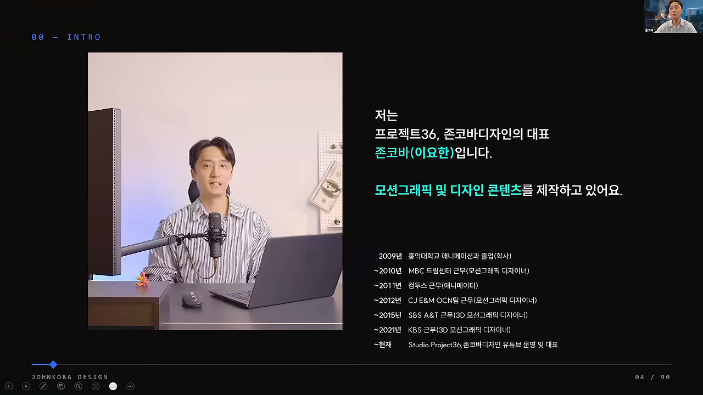
그는 17년 동안 AI 없이 작업했고, 해 오던 방식을 버리는 게 싫어서 AI를 피했다고 털어놔요. 슬라이드 아래에 걸린 썸네일은 그가 AI를 받아들인 과정을 이야기한 자기 영상이에요. 처음 이틀 만에 AI로 만든 픽사풍 애니메이션을 보고 'AI에 무릎을 꿇었다'고 표현해요.
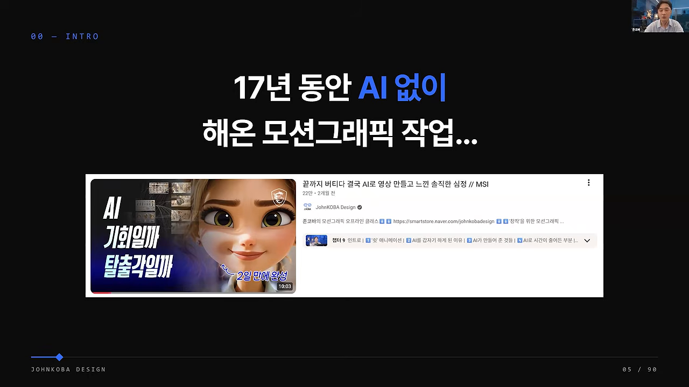
업계 비용이 이렇게 바뀌었어요
첫 번째 이유는 비용이에요. 모션그래픽 디자이너들끼리 쓰는 단체 대화방 캡처를 보여 줘요. 맨 아래 말풍선의 '3억 → 200만원(인건비 제외)'이 핵심이에요. 외주로 3억 원이 들던 5분 안팎의 풀 3D 애니메이션을 한 대기업 팀이 사내에서 AI로 더 높은 퀄리티로 만들었다는 내용이에요. 존코바는 인건비를 넣어도 2천만 원쯤이라 기업 입장에선 2억 8천만 원을 아끼는 셈이라고 계산해요.
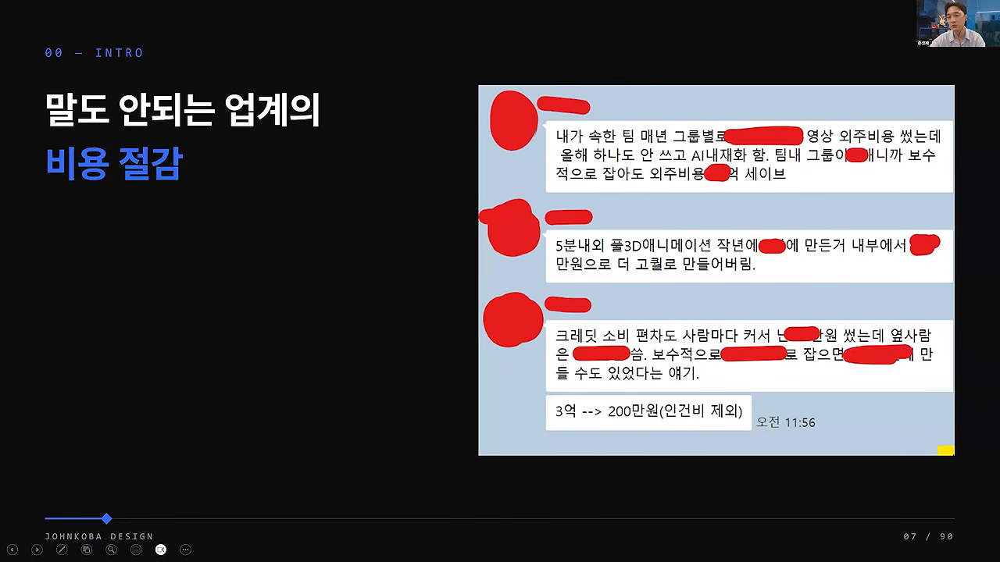
두 번째 이유는 일감이에요. 구독자 40만 명 채널인데도 영상 생성 AI가 쏟아진 뒤로 브랜디드 콘텐츠 제안이 한 달에 한 건도 안 들어왔다고 해요. 그런데 AI로 만든 영상을 올리자 상황이 뒤집혔어요. 아래 메일함 캡처처럼 AI 관련 협업 제안이 줄줄이 쌓였고, 300통 넘게 읽지 못했다고 해요.
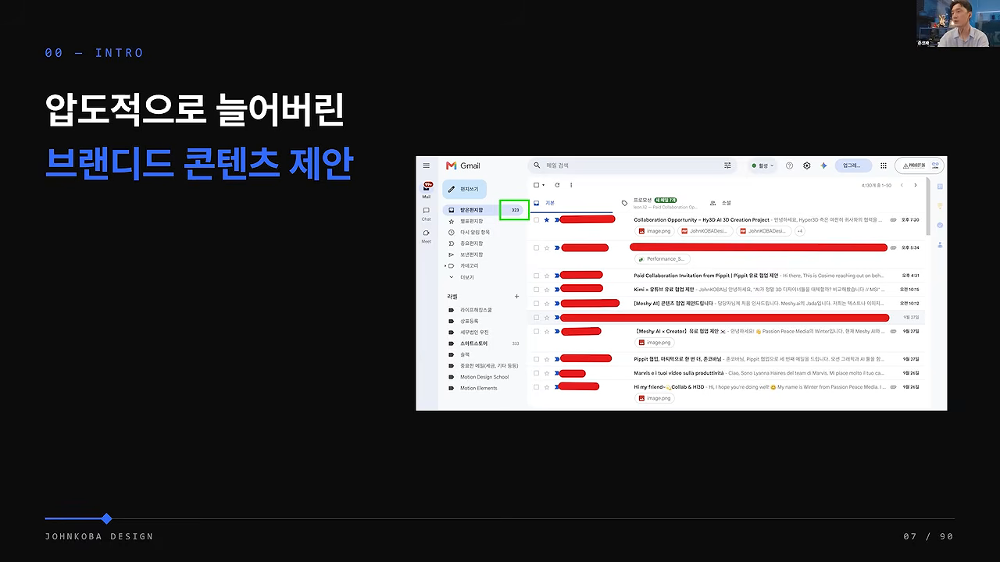
세 번째와 네 번째 이유도 있어요. 시간이 없는 급한 인포그래픽 프로젝트를 마우스 작업 없이 전부 AI로 끝냈고, 업계 인터뷰를 해 보니 최상위 하이엔드 스튜디오도 AI를 쓰고 있었어요.
AI만 잘하면 뽑힐까요
마지막으로 한 수강생 이야기를 해요. 그가 다니던 프로덕션은 AI 때문에 문을 닫았어요. 옮겨 간 회사는 AI를 쓰지 않는 신입을 아예 뽑지 않았어요. 그런데 AI 결과물은 화려한데 레이아웃, 색감, 보는 안목 같은 근본이 없는 지원자가 많아서 채용을 취소했다고 해요. 그래서 존코바는 디자인 공부를 계속하면서 AI를 함께 배워야 한다고 정리해요.
AI는 그림을 '그리지' 않아요
존코바는 AI를 '학습한 수많은 데이터의 패턴을 바탕으로 새로운 결과물을 만들어 내는 것'이라고 정의해요. 어려운 이론 대신 실무에 바로 쓰이는 두 가지 감각을 먼저 잡아 줘요.
대충 쓸수록 AI 마음대로
LLM(Large Language Model)은 대충 입력해도 빈칸을 알아서 채워 줘요. '1인 액션 영상 프롬프트 써 줘'라고만 해도 그럴듯한 프롬프트가 나오죠. 아래 막대 두 개가 그 관계를 보여 줘요. 흰 부분이 내가 정한 것, 파란 부분이 AI의 재량이에요. 구체적으로 입력하면 파란 부분이 짧고, 대충 입력하면 막대 대부분이 파랗게 변해요.
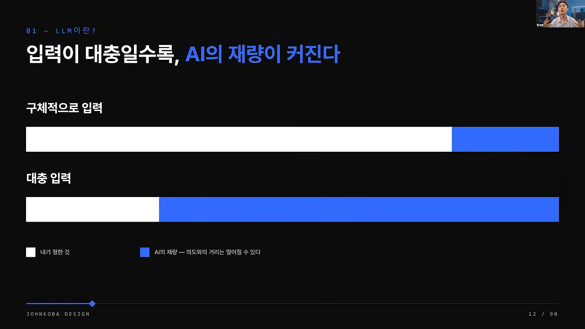
그래서 영상 문법을 아는 사람일수록 구도와 컬러까지 구체적으로 적는 편이 좋은 결과를 내기 쉬워요.
그리는 게 아니라 찾아내요
이미지 AI는 그림을 그리지 않아요. 아래 슬라이드처럼 왼쪽 회색 노이즈에서 출발해 세 단계를 거치며 조금씩 형태를 찾아가고, 맨 오른쪽에서 파란 고리 모양이 완성돼요. 학습한 패턴을 노이즈 위에 하나씩 찾아가는 과정이에요.
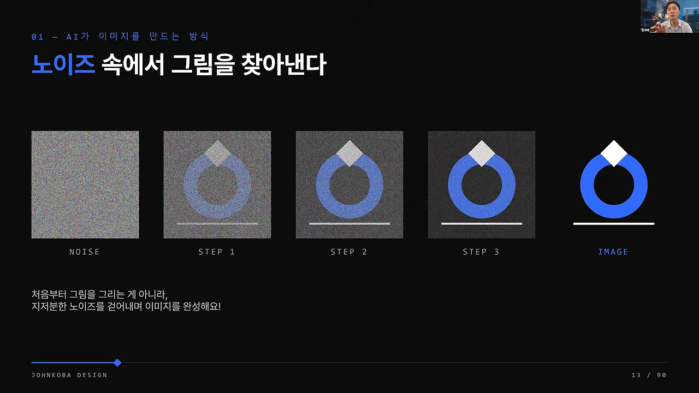
고칠수록 뭉개지는 열화 현상
존코바가 일관성보다 더 중요하다고 짚는 문제가 열화 현상이에요. 슬라이드 위쪽 캐릭터의 초록 동그라미 부분을 보면 얼굴 주변이 멍든 것처럼 얼룩져 있어요. 아래쪽은 같은 캐릭터를 개선한 버전이에요. 슬라이드 설명대로 노이즈가 쌓인다기보다 이미지를 다시 해석하고 재생성하면서 생기는 현상이에요.
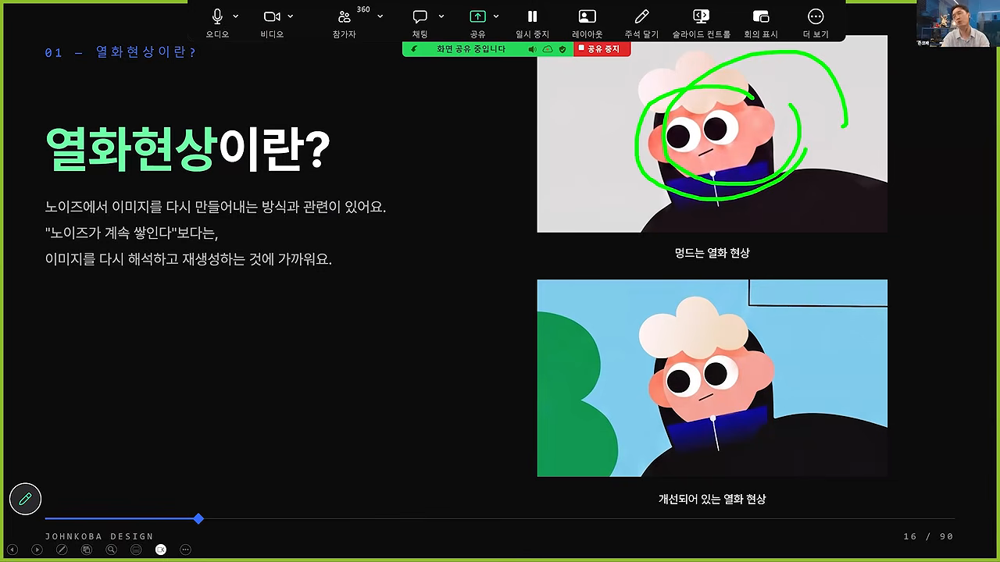
원인은 생성본에서 또 생성하는 습관이에요. 빨간 X가 붙은 슬라이드는 '생성본 → 생성본 → 생성본 → 생성본'으로 이어질수록 파란 고리가 흐려지고 기울어지는 모습이에요. 초록 체크가 붙은 다음 슬라이드는 반대로 원본·고품질 앵커 이미지에서 필요한 부분만 수정하라고 해요.
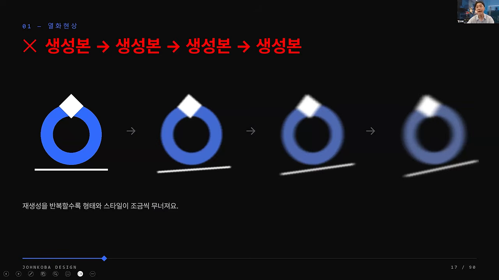
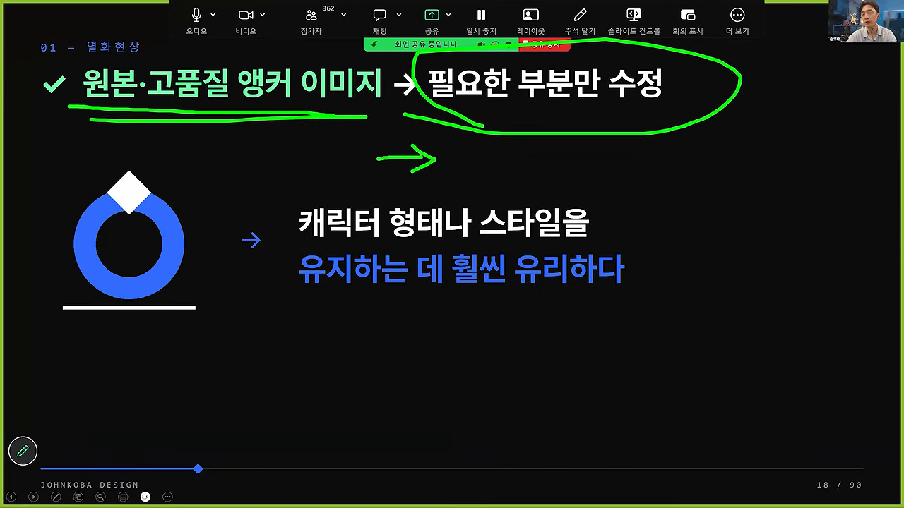
실제 예도 보여 줘요. GPT Image로 '스케이트 보드 타는 캐릭터 그려줘' → '배경 지워줘' → '책 없애고 신발 색 바꿔줘'를 차례로 시킨 세 장이에요. 오른쪽으로 갈수록 귀와 얼굴 주변이 미묘하게 뭉개지고 점처럼 번진 자국이 생겨요.
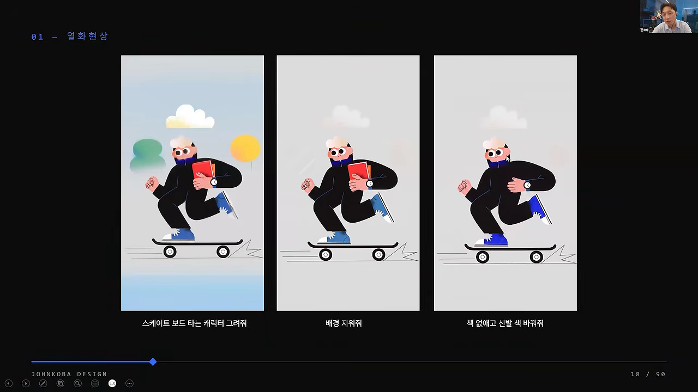
같은 조건을 처음부터 한 문장에 넣으면 어떨까요. 다음 슬라이드에서 밝게 강조된 오른쪽 이미지는 '스케이트 보드 타는 캐릭터, 배경은 회색, 책은 들고 있지 않고, 신발 색은 파란색'을 한 번에 지시한 결과예요. 선과 면이 훨씬 깔끔해요.
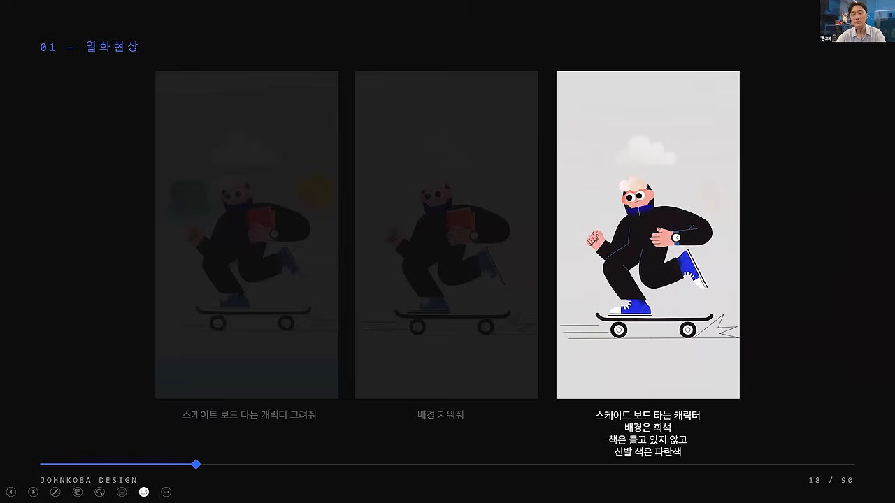
이런 열화와 낮은 일관성 때문에 AI에는 아직 한계가 있어요. 레드 카메라 같은 하이엔드 장비로 찍은 영상은 따라가지 못해요. 그래서 최상위 스튜디오는 영향을 덜 받았고, 오히려 중간 규모 회사들이 큰 타격을 받아 문을 닫기도 했다고 해요.
이미지 AI, 다섯 명의 디자이너
이미지 AI는 다섯 개를 비교해요. 슬라이드는 각 모델을 디자이너 한 명으로 표현했어요. GPT Image는 '말귀 잘 알아듣는 디자이너', Nano Banana는 '수정 잘하는 디자이너', Midjourney는 '비주얼 아티스트', Grok Imagine은 '빠른 올라운더', Seedream은 '실사, 화장품 관련 디자이너'예요.
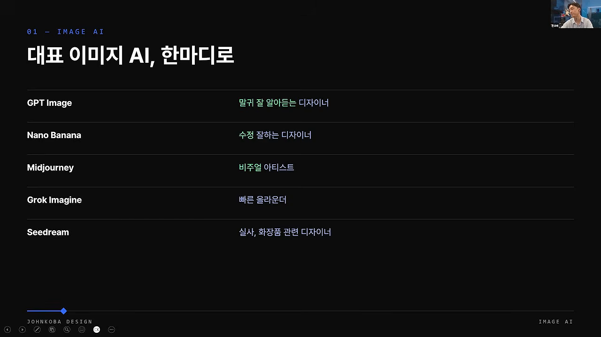
발표에서 말한 강점과 약점을 표로 정리하면 이래요.
| 모델 | 강점 | 약점 |
|---|---|---|
| GPT Image | 복잡한 지시도 잘 이해해요. 한글·영어·한자·일본어 글자를 잘 표현해요 | 일관성은 여전히 한계가 있어요. 시키지 않은 부분까지 바꾸기도 해요 |
| Nano Banana | '파란색을 빨간색으로'처럼 시킨 부분만 정확히 고치는 부분 수정 | 미감이 약하고 감성이 부족해요 |
| Midjourney | 미감, 스타일, 분위기. 초반 콘셉트 이미지를 뽑을 때 실무자들이 많이 써요 | 정확한 지시를 잘 따르지 않고, 글자는 표현하지 못해요 |
| Grok Imagine | 이미지에서 영상까지 이어 갈 수 있어요 | 실무에선 많이 쓰이지 않아요 |
| Seedream | 인물·실사·화장품을 화사하고 예쁘게 뽑아요 | 과해 보일 때가 있어요 |
같은 프롬프트로 직접 비교한 슬라이드도 있어요. 위 줄은 스케이트보드 타는 2D 캐릭터, 아래 줄은 '피곤해 보이는 직장인'이에요. 왼쪽부터 GPT Image 2.5, Nano Banana Pro, Midjourney, Grok, Seedream 5 Pro 순이에요. 아래 줄 맨 오른쪽 Seedream은 피곤하기는커녕 화보처럼 말끔하고, 두 번째 Nano Banana는 좀비처럼 지쳐 보여요.
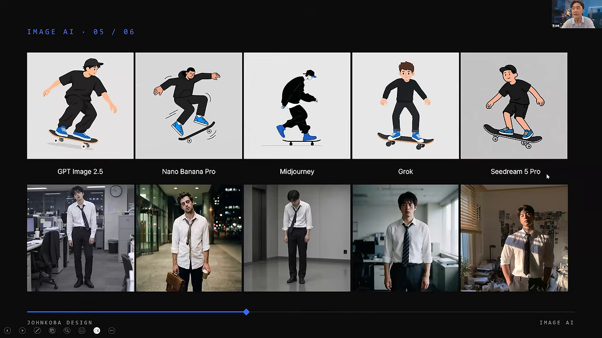
퀴즈도 두 개 냈어요. 첫 번째는 붉은 나무가 선 작은 섬 그림이에요. 빛과 색감에서 감도가 높게 느껴지는 이 그림은 Midjourney 작품이에요.
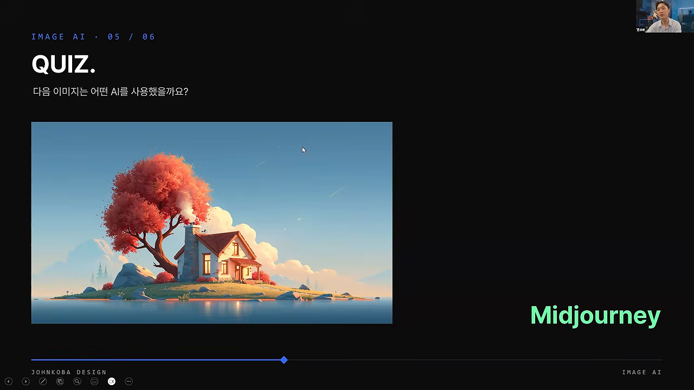
두 번째는 'MAESTRO'라는 큰 글자 앞에서 지휘하는 캐릭터예요. 글자가 정확히 들어가 있다는 게 힌트예요. Midjourney는 이런 글자를 아예 표현하지 못하니, 정답은 GPT Image예요. 물론 레퍼런스를 넣어 방향을 잡았다고 덧붙여요.
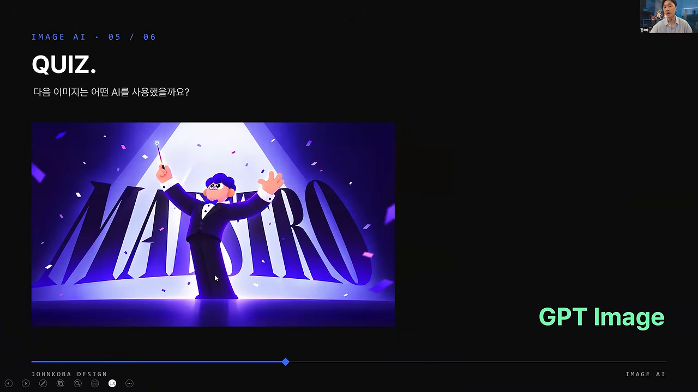
다섯 명을 고용했다고 생각하세요
존코바가 말하는 실무 흐름을 그림으로 옮기면 이래요. 기획은 GPT나 Claude로 하고, 룩과 콘셉트는 Midjourney로 탐색하고, GPT Image와 Nano Banana로 수정하며 일관성을 잡은 뒤 영상 모델로 넘겨요.
그래서 결론은 '어떤 AI가 제일 좋냐'는 질문이 이제 별로 의미가 없다는 거예요. 슬라이드 아래 작은 글씨처럼 생성, 수정, 스타일 탐색, 캐릭터 유지, 타이포그래피 등 작업에 따라 모델을 바꾸는 게 더 합리적이에요.
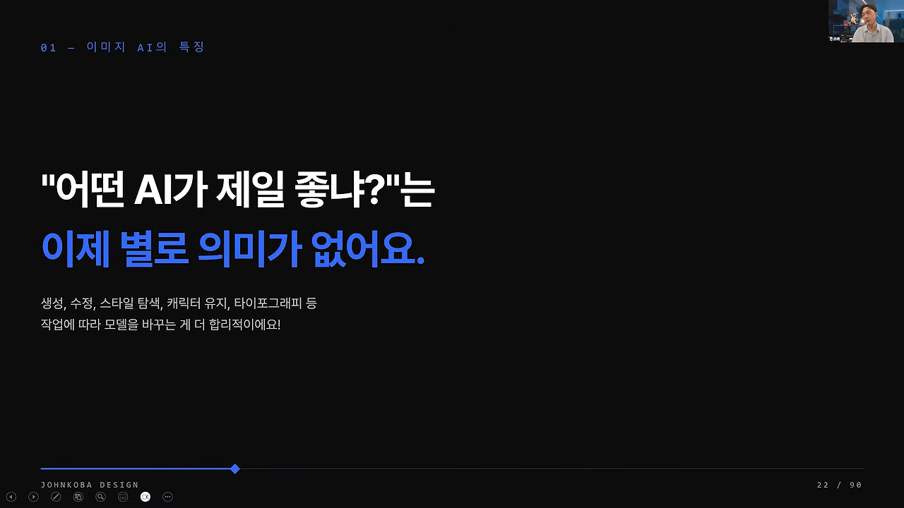
영상 AI는 모델보다 샷 궁합
영상 AI는 네 개로 추려요. Sora처럼 접은 서비스도 있어서 남은 건 많지 않다고 해요. 슬라이드 표는 Seedance 2.5를 '연출형 올라운더, 요즘 대세', MiniMax H3를 '움직임 + 멀티모달, 타이포에 특화', Kling을 '안정적인 영상 생성기', Veo 3.1을 '영화 촬영형'이라고 소개해요.
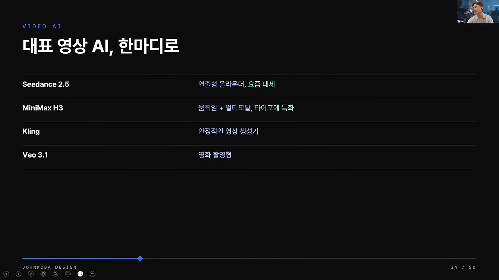
| 모델 | 발표에서 말한 특징 | 어울리는 샷 |
|---|---|---|
| Seedance 2.5 | 로우 앵글 같은 연출을 알아서 넣어요. 최대 30초, 영상·오디오·레퍼런스 이해까지 고루 좋은 '육각형'이에요. 대신 비싸요 | 캐릭터, 영화 같은 연출 |
| MiniMax H3 | 글자를 잘 표현해요. 키네틱 타이포그래피 예제는 Seedance보다 훨씬 잘 나왔어요 | 타이포가 들어가는 영상 |
| Kling | 인물 움직임이 안정적이에요. 지금은 저렴해서 쓰는 경우가 많아요 | 제품처럼 안정이 필요한 영상 |
| Veo 3.1 | 실사 표현이 강해요. 2D로 요청했는데도 실사로 바꿔 버렸어요 | 실사 영상 |
MiniMax H3 슬라이드는 강점 칸에 '최대 2K/15초, 이미지·영상·오디오 레퍼런스, 모션 트랜스퍼, 텍스트·브랜드 표현'을 적었어요. 오른쪽에서 스케이트보드를 타는 남자는 같은 캐릭터 이미지로 만든 MiniMax 결과예요.
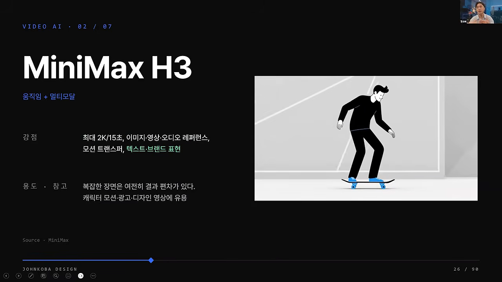
샷마다 맞는 모델이 달라요
수업 예제 두 개를 나란히 틀었어요. 왼쪽은 Seedance 2.5로 만든 칼 든 주황 캐릭터의 2D 모션그래픽, 오른쪽은 MiniMax H3로 만든 JOHNKOBA DESIGN 키네틱 타이포그래피예요. 타이포 예제는 스케치 없이 프롬프트만으로 여덟아홉 번 만에 나왔고, 컷을 바꾸는 매치 컷도 프롬프트에 넣었다고 해요.
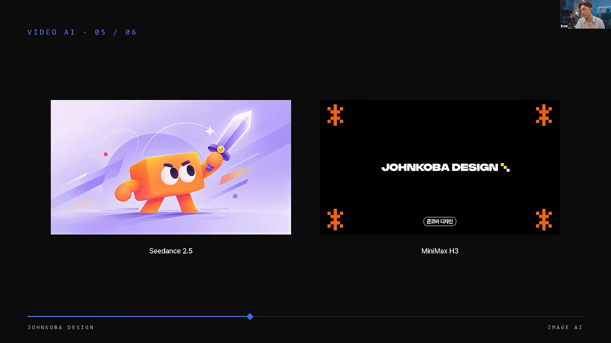
그래서 영상도 결론은 같아요. 슬라이드 문구처럼 '어떤 AI가 제일 좋아요?'보다 '이 샷에는 어떤 AI가 좋아요?'가 더 정확한 질문이에요.
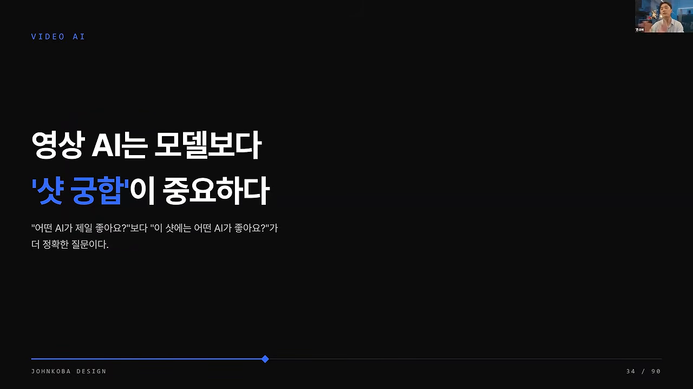
가챠의 범위를 좁히는 프롬프트
AI 생성이 가챠라면, 프롬프트는 뽑기의 범위를 좁히는 도구예요. 존코바는 '한계를 줄이는 프롬프트 5가지 팁'을 차례로 보여 줘요.
1. 원하는 것보다 조건을 명확하게
무엇을 만들지만 적지 말고 구도, 스타일, 카메라, 색감 같은 조건을 지정하라는 팁이에요. 오른쪽 예시 프롬프트는 폭탄 캐릭터의 3면도를 요청하면서 '폭탄은 구 형태로', '왼쪽은 정면, 가운데는 측면, 오른쪽은 뒤쪽을 보는 45도 반측면', '심지 방향도 캐릭터 방향에 맞게'까지 적었어요.
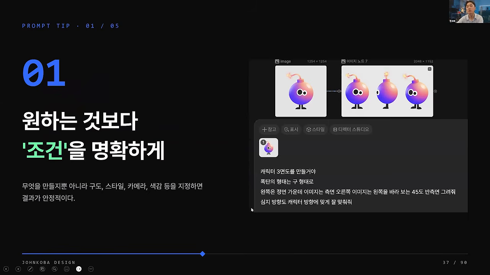
2. 하지 말아야 할 것도 알려 주기
조건을 거는 게 포지티브라면, 금지하는 게 네거티브 프롬프트예요. 슬라이드 아래 입력창에 적힌 '3D 혹은 실사화 절대 금지' 한 줄이 예시예요. 이걸 넣으면 결과가 2D 모션그래픽에 더 가까워져요. 슬라이드는 3D 금지, 카메라 고정, 텍스트 없음 같은 제약을 예로 들어요.
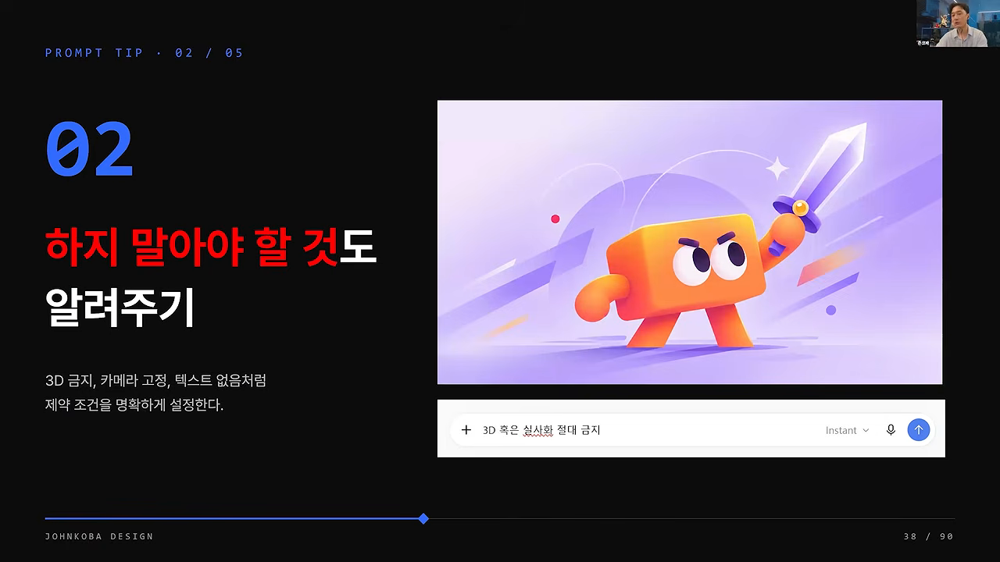
3. 전문 용어를 알수록 정확해요
세 번째 슬라이드는 '1-point perspective, ease in/out, overshoot' 같은 용어를 예로 들어요. 정확한 용어 하나면 긴 설명이 필요 없어요. 오른쪽 영상은 로우 앵글과 디테일 샷, 사전 동작 등을 프롬프트에 넣어 만든 거예요.
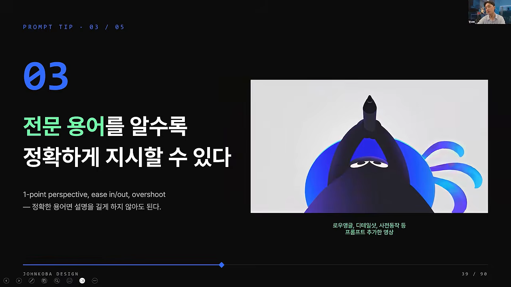
얼마나 아는지 퀴즈로 확인했어요. 첫 문제는 밑에서 올려다본 로우 앵글이었고 채팅에서 대부분 맞혔어요. 정면 눈높이에서 위아래 면이 보이지 않게 보는 건 아이레벨이라고 덧붙여요. 두 번째 문제가 어려웠어요. 화면에 그은 초록 사선처럼 화면 전체가 기울어진 구도로, 정답은 3번 더치 앵글이에요.
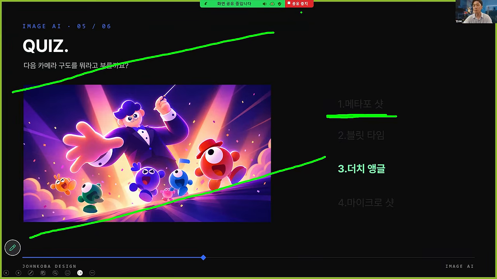
메타포 샷은 주제를 은유로 보여 주는 장면이에요. 페라리 광고라면 출발 직전 말이 발을 구르는 장면과 차를 번갈아 보여 주다, 말이 뛰는 순간 차도 출발하는 식이에요. 불릿 타임은 영화 매트릭스처럼 슬로 모션이 걸린 채 카메라가 360도로 도는 연출이에요.
4. 반복할 내용은 규칙으로
매번 쓰는 지시는 규칙으로 만들어 두라는 팁이에요. 존코바가 가장 많이 쓰는 규칙은 애니메이션 원칙과 아이들링이에요. 슬라이드의 검은 고양이 영상 아래에는 '아이들링 필수로 넣어요!'라고 적혀 있어요.
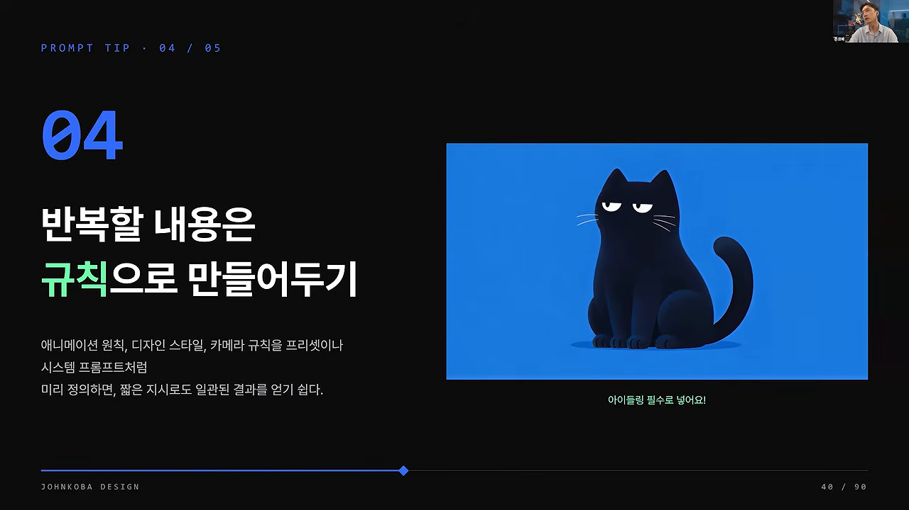
다섯 번째 팁은 '자연어로 말해도 충분하다'예요. LLM이 대충 말해도 알아듣기 때문에, 결국 차이를 만드는 건 근본이라는 거예요.
근본: 샷 연출과 애니메이션 원칙
근본의 첫 예는 샷 연출이에요. 슬라이드는 같은 이미지로 만든 두 영상을 위아래로 놓았어요. 위는 기본 애니메이션, 아래는 팔로우, 푸시 인, 푸시 아웃 같은 연출을 넣은 버전이에요. 아래쪽이 훨씬 실무자가 만든 모션그래픽처럼 보여요.
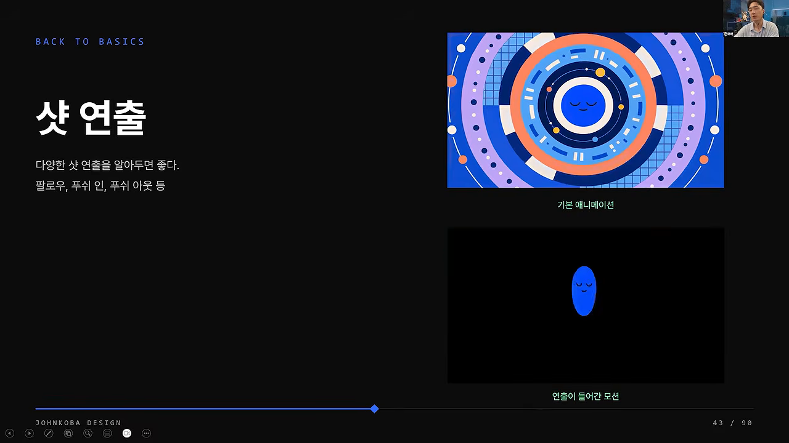
두 번째 예는 애니메이션 원칙이에요. 손 흔드는 소녀 캐릭터는 스쿼시 앤 스트레치를 명시해야 말랑하게 늘었다 줄어드는 움직임이 나와요. 지시하지 않으면 이상하진 않아도 밋밋해요. 이어서 12원칙 중 다섯 개를 찾는 퀴즈를 냈어요. 화면에 남아 밝게 표시된 다섯 개가 정답이에요. 사전 동작 & 잔여 동작, 과장, 호(곡선), 세컨더리 액션, 스쿼시 & 스트레치예요.
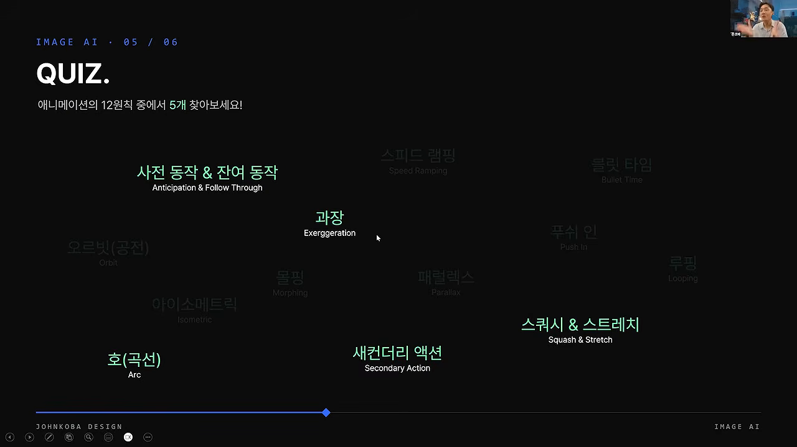
그래도 결국 가챠예요
근본을 알아도 결과는 뽑기예요. 존코바는 반농담으로 카지노 승률이 49.9라면 AI 생성의 체감 승률은 50.1쯤이라고 해요. 슬라이드 아래에도 '비유입니다. 그냥 뇌피셜!'이라고 적혀 있어요.
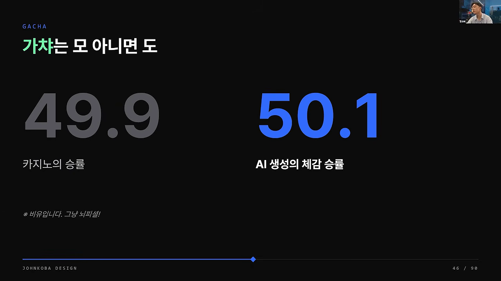
같은 프롬프트로 네 장을 뽑은 예도 보여 줘요. 보라 배경에 빨간 막대가 있는 구도는 같지만, 가운데 물체는 기둥, 원뿔, 작은 뿔, 공으로 제각각이에요.
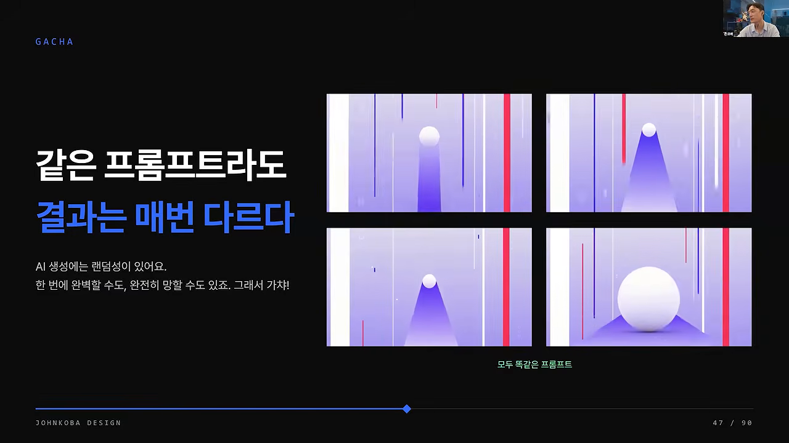
그렇다고 완전한 운은 아니에요. 프롬프트, 레퍼런스 이미지, 구도, Seed, 모델 선택, 제약 조건으로 원하는 결과의 확률을 높일 수 있어요. 그래서 마지막 슬라이드는 앞으로 '생성'보다 '선별'을 잘해야 한다고 정리해요.
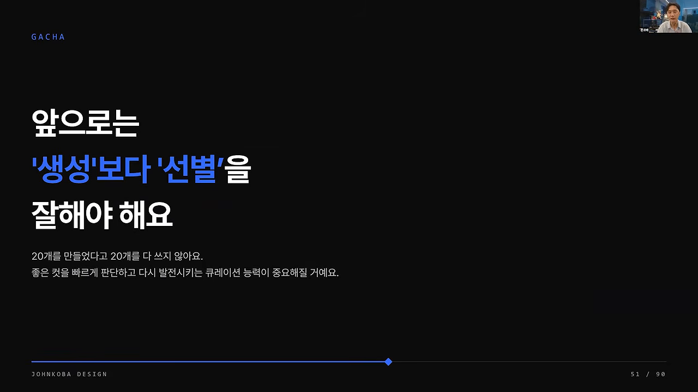
크레딧을 아끼는 여섯 가지
많이 뽑을수록 좋은 결과를 만날 확률이 올라가지만, 크레딧은 비싸요. 존코바가 큰돈을 쓰며 터득했다는 절약법 여섯 가지예요. 슬라이드에는 'SAVE CREDITS 01/06'처럼 번호가 붙어 있어요.
01. 생성 전에 프롬프트를 검수해요
LLM이 써 준 프롬프트는 길어서 아무도 안 읽어요. 그런데 스승에게 배운 첫 원칙이 '무조건 읽어라'였대요. 슬라이드 오른쪽은 실제로 쓴 2D 벡터 애니메이션 프롬프트예요. '[0.0-0.7초]', '[0.7-3.8초]'처럼 구간마다 동작이 빽빽하게 적혀 있고, 아래 초록 글씨로 '빠짐 없이 읽어주세요'라고 강조해요.
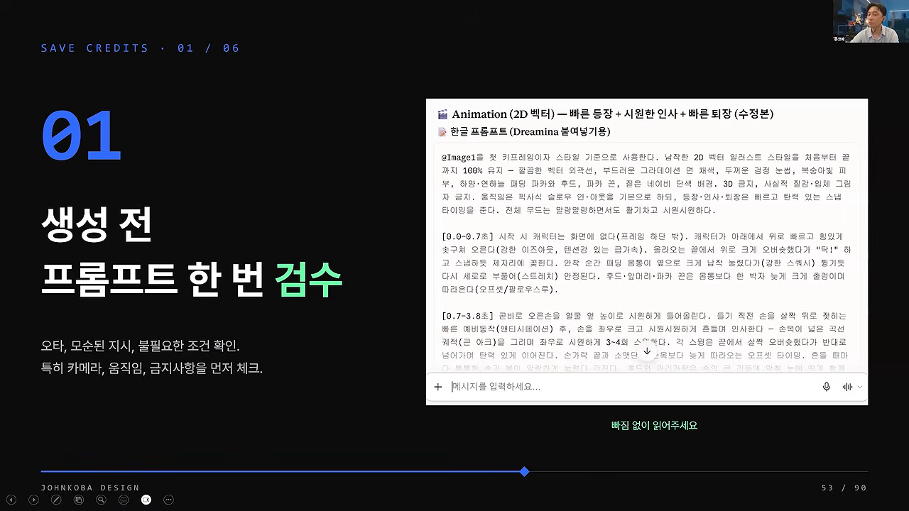
프롬프트 언어도 물었는데요. 한글로 확인하고 영어로 바꿔 넣는 게 결국 좋다고 해요. 짧고 단순한 건 한글로도 괜찮아요.
02. 영상보다 이미지를 먼저 확정해요
영상을 뽑기 전에 이미지부터 확인해요. 오른쪽 격자는 존코바가 AI로 만든 2D 모션그래픽 'Maestro(마에스트로)'를 만들기 전에 뽑아 둔 스토리보드 이미지들이에요. 지휘자 캐릭터가 나오는 이 작품은 강의 내내 예시로 쓰여요. 최종 영상과 조금 다른 부분도 있지만 흐름이 거의 같아서 결과를 미리 예측할 수 있었대요.
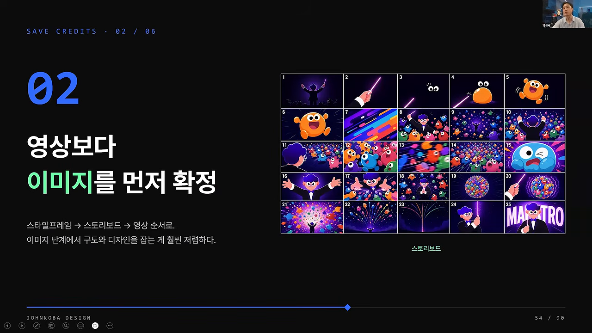
03. 저해상도로 테스트하고 마지막에 고해상도로
가장 많이 쓰는 방법이에요. 화면의 '480p → 1080p' 화살표처럼 테스트는 480p로 하고, 최종으로 고른 컷만 고해상도로 뽑아요. 업스케일해도 되고, 존코바처럼 아예 고해상도로 다시 생성해도 돼요.
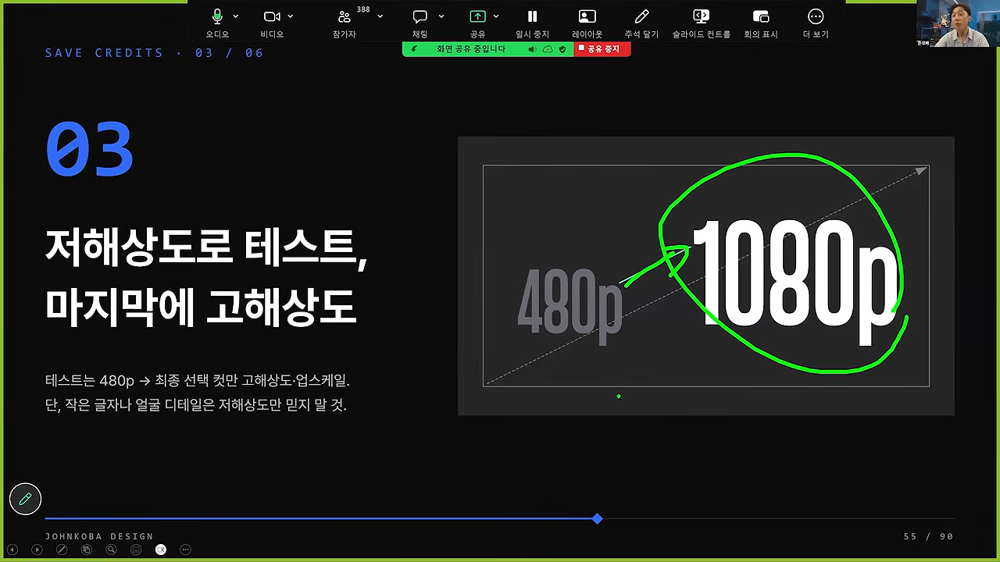
04. 애니메틱으로 타이밍부터 확인해요
애니메틱은 최종 영상 전에 타이밍과 움직임을 가늠하려고 만드는 가이드 영상이에요. 스토리보드를 이어 붙인 느낌이에요. 슬라이드의 보라색 지휘자 영상은 저화질로 미리 편집한 거예요. Maestro 하나에 이런 저화질 컷이 60개 넘게 들어갔대요.
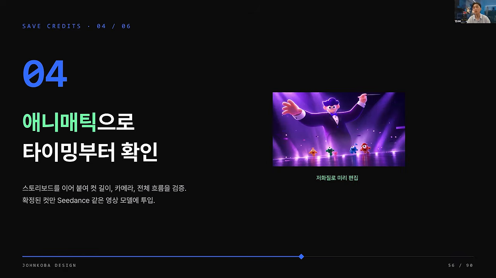
05. 영상 길이에 맞게 프롬프트를 써요
존코바가 직접 많이 실수했다는 부분이에요. 10초짜리에 컷을 17개 넣었더니 제멋대로 나왔고, 여섯일곱 컷으로 줄이자 잘 나왔대요. 5초라면 컷 두 개 정도가 적당해요. 슬라이드 예시는 5초를 두 구간으로 나눴어요. '0″~3″ 정면을 바라보고 칼질하는 모션', '4″~5″ 카메라가 피사체를 중심으로 회전하면서 점프를 하는 모션'이에요.
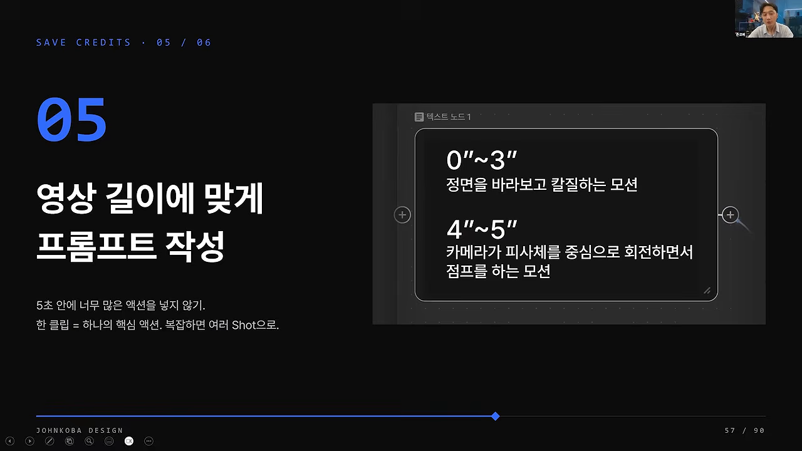
06. 잘 나온 결과는 앵커로 살려 둬요
가챠로 뽑다가 좋은 결과가 나오면 무조건 살려 둬야 해요. 앵커는 배의 닻처럼 기준이 되는 중심축이에요. 슬라이드 위의 Maestro 지휘자 이미지를 앵커로 두고, 아래 세 장처럼 같은 무드의 장면을 이어서 뽑았어요.
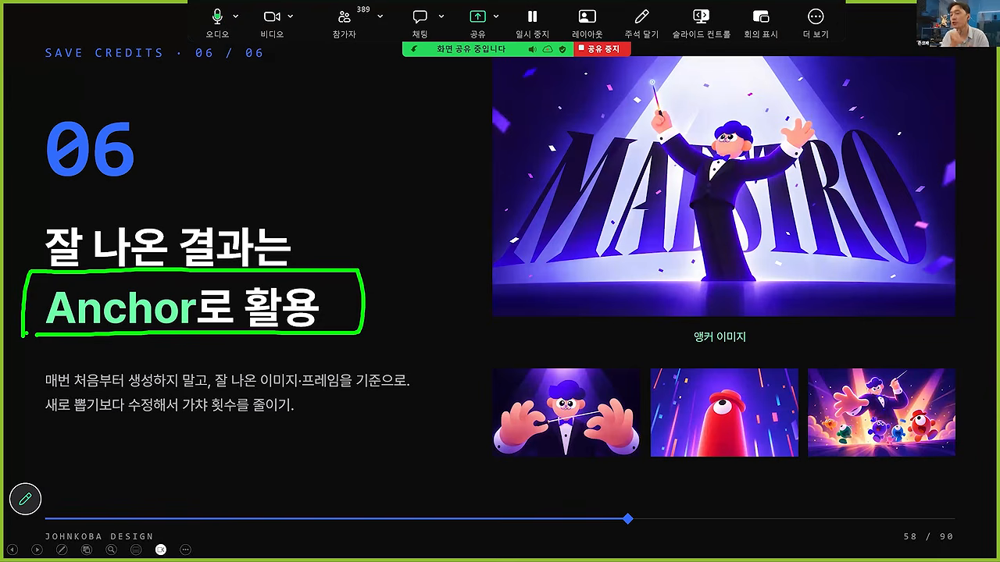
의도대로 만들고 AI 티 줄이기
설명하기 어려우면 보여 주세요
프롬프트로 적기 어려운 건 레퍼런스 이미지로 보여 주는 게 가장 빨라요. 슬라이드 위쪽 작은 그림이 존코바가 예전에 직접 만든 레퍼런스이고, 아래 큰 그림이 그걸 넣어 AI로 만든 칼 든 캐릭터예요. 내용은 달라도 보라색 톤과 캐릭터의 결이 닮았어요.
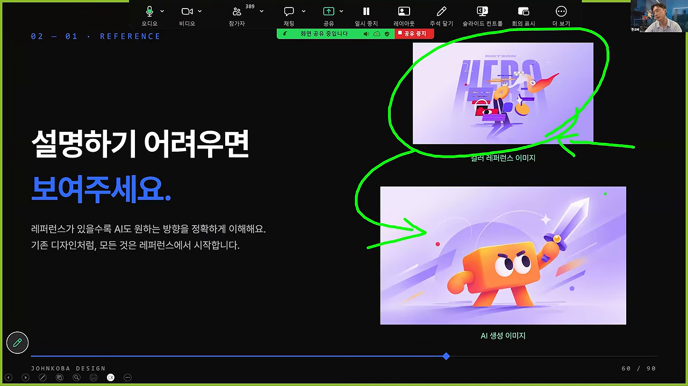
채팅에서 핀터레스트 이미지를 레퍼런스로 넣어도 되냐는 질문이 나왔어요. 존코바는 엄밀히 따지면 문제가 될 수 있는 게 맞다고 인정해요. 다들 그냥 쓰고 있지만, 창작자가 설 자리를 위해 빨리 정리돼야 할 부분이라고 덧붙여요.
캐릭터나 제품은 3면도 같은 시트를 먼저 만들어 두면 실패 확률이 크게 줄어요. 시트가 있으면 여러 컷에서 같은 캐릭터를 유지하기 쉬워요.
정확한 포즈는 라인 드로잉으로
아무리 적어도 AI가 자세를 못 알아듣는 경우가 많아요. 그럴 땐 선만 남긴 라인 드로잉을 넘겨요. 슬라이드는 왼쪽 'Line Drawing / Sketch'의 선화, 가운데 'AI 스타일 적용'의 캐릭터, 오른쪽 '완성 이미지' 순서예요. 오른쪽 완성본이 왼쪽 선화의 자세를 그대로 따라가요.
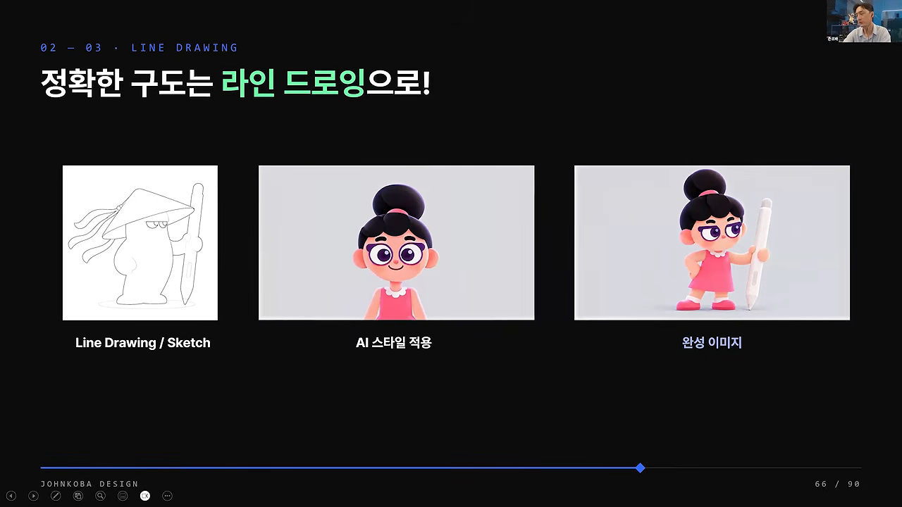
요소별로 지시해요
'여자'라고만 적으면 왼쪽처럼 평범한 인물 사진이 나와요. 오른쪽은 'Woman + centered composition + low angle + wide lens + soft side lighting + blue monochrome palette + flat 2D vector'처럼 구도, 앵글, 렌즈, 조명, 색, 스타일을 하나씩 지정한 결과예요.
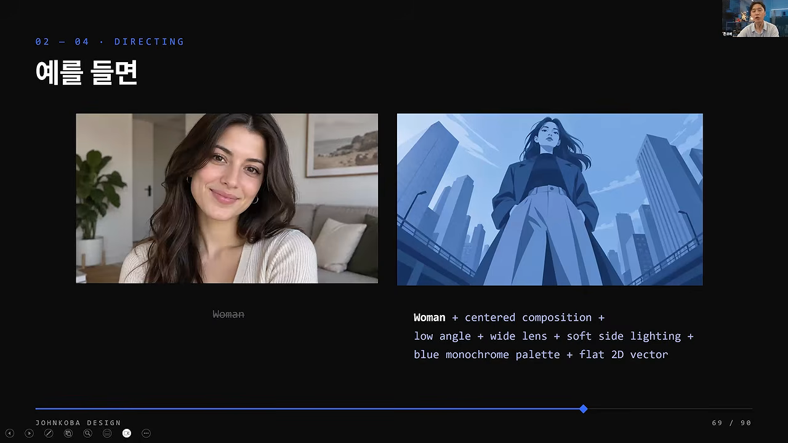
Maestro 장면 하나를 어떤 프롬프트로 만들었는지도 풀어 줘요. 표처럼 Subject, Environment, Composition, Camera, Lighting, Color, Style 칸을 채웠어요. 지휘봉을 든 지휘자와 작은 캐릭터 여섯, 반사 재질 바닥의 무대, 지휘자는 화면 뒤에 크게 캐릭터들은 카메라를 향해 도망, 왜곡이 많이 되는 광각 렌즈, 2D 벡터 스타일 같은 식이에요.
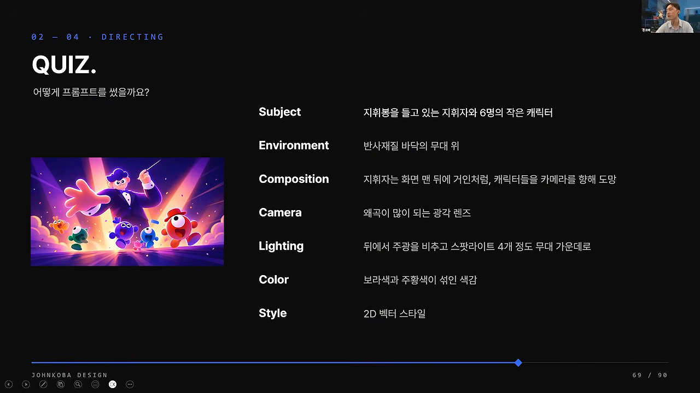
이 과정을 한 줄로 정리한 슬라이드가 'KEY TAKEAWAY'예요. 레퍼런스 활용 → 캐릭터·제품 시트 → 라인 드로잉 → 요소별 디렉팅 → AI 생성 다섯 단계예요.
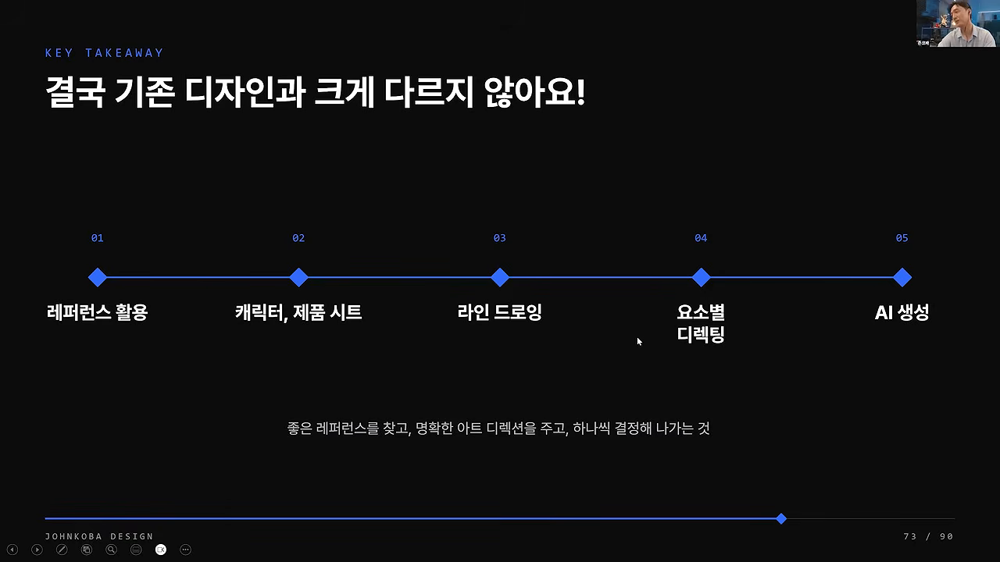
AI 티를 줄이는 법
AI 티를 완전히 지우는 건 불가능하지만 줄일 수는 있어요. 먼저 AI가 잘하는 스타일을 고르는 거예요. 실사 인물, 음식, 3D와 클레이, 제품 렌더는 강하고, 그래픽 디자인과 2D 캐릭터는 티가 잘 나요. 음식은 너무 잘 만들어서 음식 사진 촬영 업계가 크게 흔들렸다는 이야기도 들었대요.
그렇다고 2D가 무조건 불리한 건 아니에요. 같은 장면을 2D와 3D로 만든 비교에서, 왼쪽 2D 캐릭터 눈매가 오른쪽 3D보다 오히려 덜 어색해요. 슬라이드 문구도 '잘 만든 2D가 오히려 불쾌함을 없애는 느낌을 전달해줘요'예요.
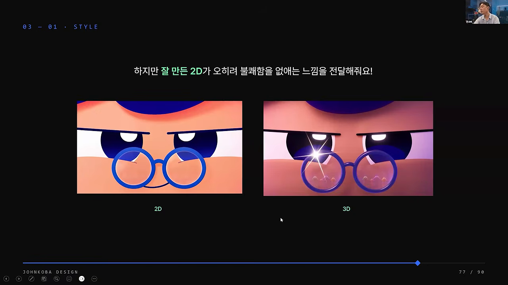
두 번째는 실제 영상처럼 샷을 나누는 거예요. 표의 Wide Shot은 공간과 상황 설명, Medium/Close-up은 인물과 행동, Detail Shot은 작은 디테일 강조, Insert Shot은 손·물건·화면 등 정보 전달, POV(Point of View)는 인물의 시점, Metaphor Shot은 메시지를 이미지로 표현해요.
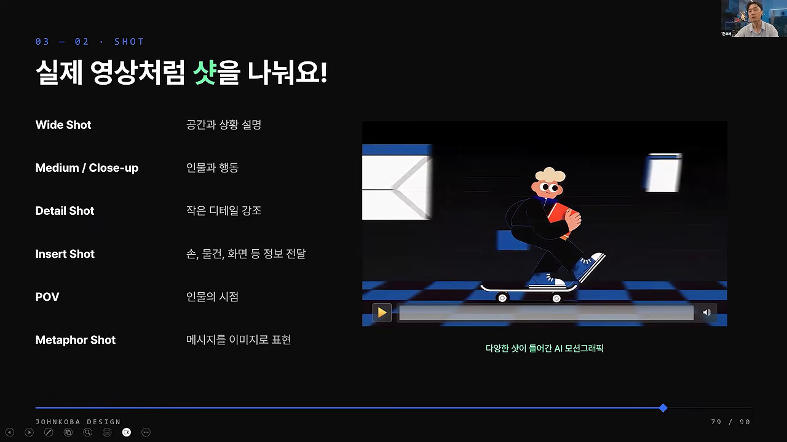
마지막은 사람의 편집이에요. 'AI 생성 → 좋은 부분 선택 → 컷 편집 → 타이밍 → 사운드 → 컬러 → 모션그래픽' 일곱 단계예요. AI에서 완성 영상을 한 번에 얻으려 하기보다 이 과정을 거치는 편이 낫다고 해요.
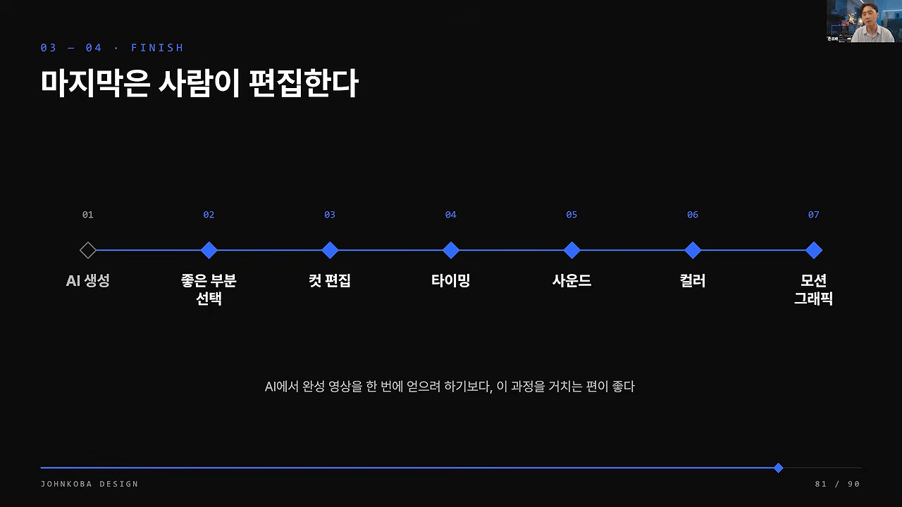
실제 Maestro 편집 화면도 열어 줘요. Premiere Pro 타임라인 아래쪽 초록 오디오 트랙이 여러 겹으로 쌓여 있어요. 사운드를 그만큼 공들여 깔았다는 뜻이에요.
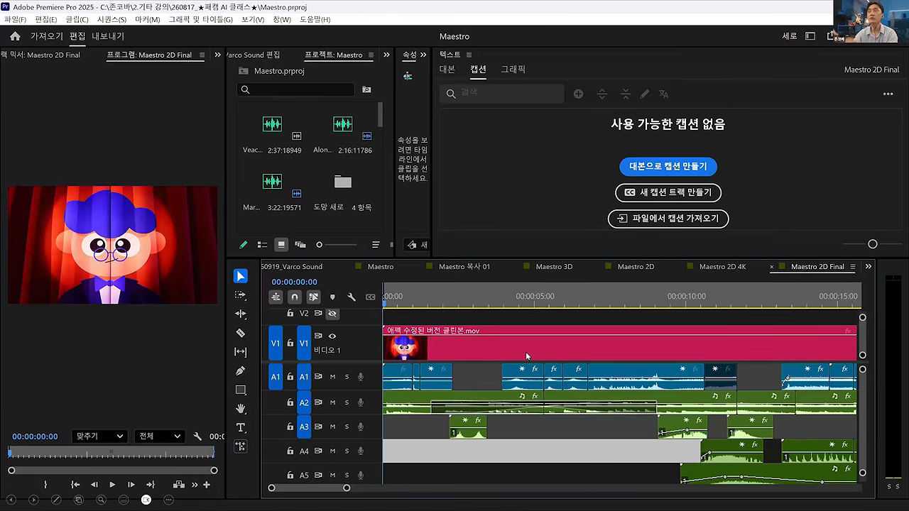
실습: 스케이트보드 2D 모션그래픽
마지막으로 스케이트보드 타는 캐릭터가 노트북 화면 속으로 빨려 들어가는 짧은 2D 모션그래픽을 직접 만들어 봐요. 편집 없이 생성 과정만 보여 줬어요. 도구는 Newtake라는 노드 방식 서비스예요. Higgsfield나 Magnific 안에서도 같은 모델을 불러 쓸 수 있지만, 노드로 흐름을 한눈에 볼 수 있어서 골랐다고 해요. 노드 방식은 Blender나 ComfyUI에서도 쓰는, 실무에서 익숙한 방식이에요.
전체 흐름을 노드 연결대로 그리면 이래요.
flowchart LR A["캐릭터 전신 이미지"] --> B["Photoshop Find Edges
라인 드로잉"] B --> D["GPT Image 2.5 Pro
캐릭터 합성"] C["캐릭터 얼굴 이미지"] --> D D --> E["Nano Banana Pro
신발 색 수정"] E --> G["GPT Image 2.5 Pro
스케이트보드 포즈"] F["스케이트보드 레퍼런스"] --> G H["텍스트 노드 + GPT-6 Astra
샷별 스크립트"] --> J["비디오 노드
Seedance 2.5 · 480p · 16:9"] G --> J I["배경 이미지"] --> J
1. 라인 드로잉 만들기
캐릭터 자세를 정확히 따라가게 하려면 선화가 좋아요. Photoshop에서 이미지를 연 뒤 메뉴의 필터 → 스타일화(Stylize) → Find Edges를 고르면 돼요. 아래 화면에서 펼쳐진 메뉴 끝의 Find Edges가 그 항목이에요.
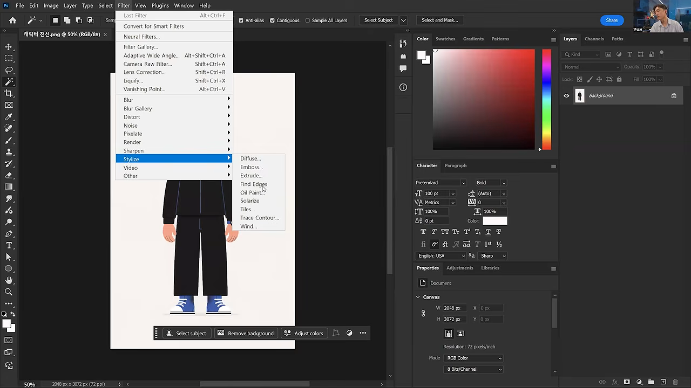
적용하면 색이 빠지고 윤곽선만 남은 캐릭터가 돼요. 이걸 캡처해 Newtake로 가져가요.
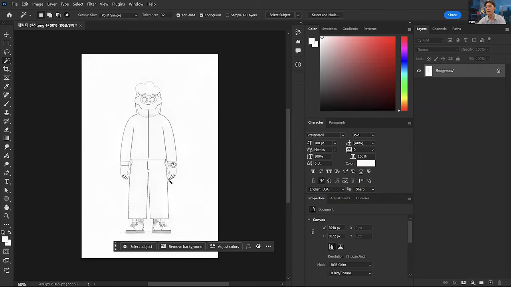
2. 선화와 얼굴을 합쳐 캐릭터 만들기
선화 노드와 존코바가 디자인한 캐릭터 얼굴 노드를 이미지 노드 하나에 연결해요. 프롬프트 창의 썸네일 1번이 얼굴, 2번이 선화예요. 입력한 문장은 '이미지2 형태는 유지한 채 이미지1 얼굴과 옷 등 자연스럽게 표현해줘, 전체적인 스타일은 이미지1 따라가고 배경은 밝은 회색으로'예요. 모델은 GPT Image 2.5 Pro예요.
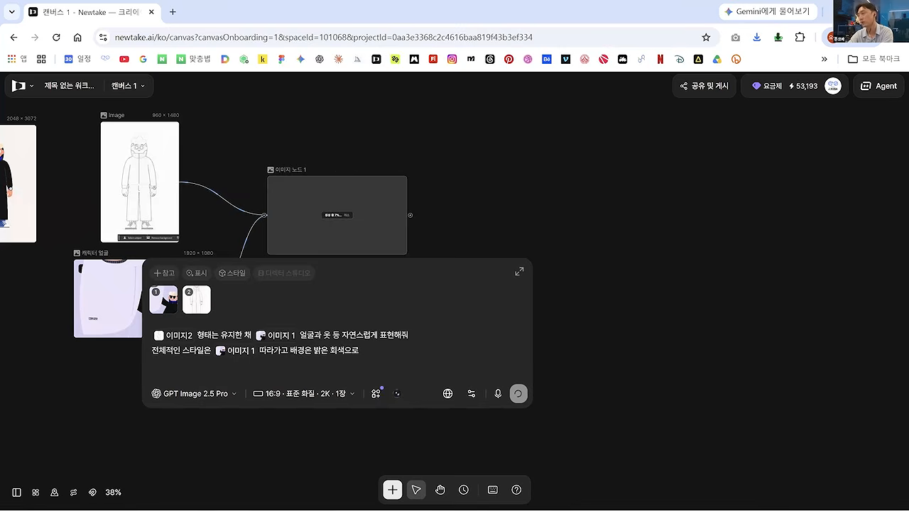
결과는 선화의 자세 그대로 얼굴과 옷이 입혀진 캐릭터예요. 약간의 열화는 있지만 포즈가 정확하게 나왔다고 평가해요.
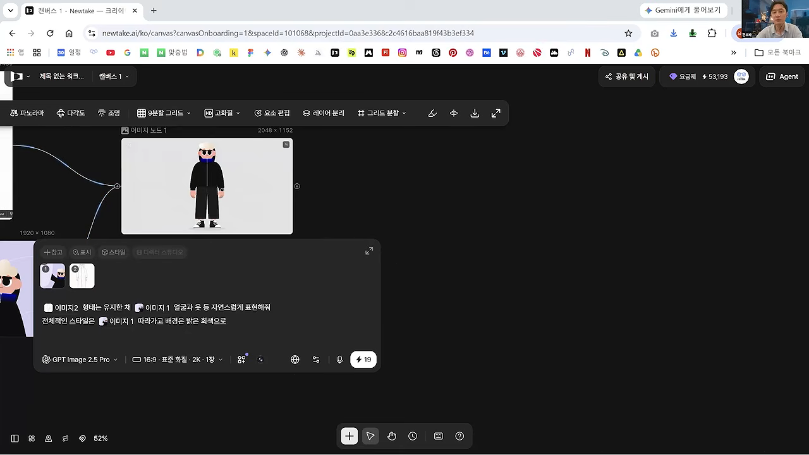
3. 신발 색은 Nano Banana로
수정은 Nano Banana예요. 이미지 노드를 하나 더 붙여 Nano Banana Pro에 '신발 검정 부분을 파란색으로 변경'을 시켜요. 발표 전에 준비한 슬라이드가 그 전후를 보여 줘요. 왼쪽은 검은 신발, 오른쪽은 파란 신발이에요.
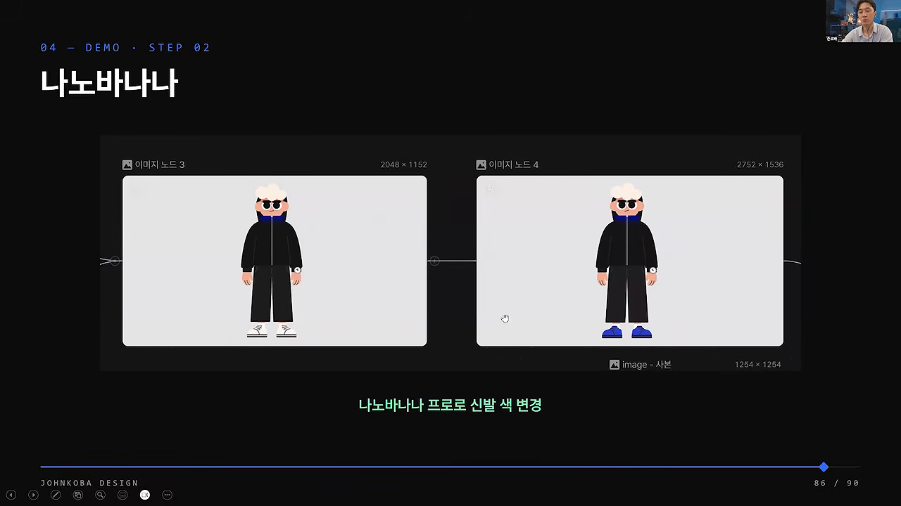
4. 스케이트보드 타는 포즈로
스케이트보드 타는 레퍼런스 일러스트(왼쪽 아래)와 파란 신발 캐릭터를 연결하고, 이번엔 GPT Image 2.5 Pro로 생성해요. 프롬프트는 '이미지2 캐릭터는 정확하게 유지하면서 이미지1처럼 스케이트보드 타는 모습으로 바꿔줘, 배경은 아무 것도 없고 밝은 회색, 책은 들고 있지 않도록 만들어'예요. 첫 결과가 마음에 들지 않아 마지막 줄에 '얼굴 정확하게 표현'을 더해 다시 뽑았어요.
프롬프트 언어 질문에는 이렇게 답해요. 이런 단순한 건 한글도 괜찮지만 15초짜리를 뽑을 땐 영어가 좋아요.
5. 텍스트 노드로 샷별 스크립트 받기
영상 지시문은 텍스트 노드에서 LLM에게 맡겨요. 화면의 입력은 '스케이트 보드를 타고 가는 모습. 노트북 앞에서 준비 동작 이후 점프! / 슬로우 모션이 걸리며 모니터 창 안으로 빨려 들어감 / 터널 이펙트처럼 Fov 시점으로 들어간 뒤 도착하고 / JOHNKOBA DESIGN 텍스트 등장'이에요. 이어서 적은 줄에는 2D 스타일 유지와 3D·실사 금지, 긴장과 이완, 준비 동작 필수, 스쿼시 앤 스트레치 표현 같은 조건이 이어져요. 모델은 GPT-6 Astra를 골랐어요.
긴장과 이완은 '조였다가 고조된 뒤 확 풀어 주는' 연출을 말해요. LLM이 돌려준 스크립트는 샷마다 시간, 앵글, 동작, 긴장과 이완, 트랜지션, 사운드를 나눠 적어요. 아래 화면의 '샷 02. 점프 전 준비 동작'은 3~6초, 바닥 높이의 보드 클로즈업에서 미디엄 샷으로 넘어가요. '샷 03. 도약과 해방'은 6~7.5초, 사선 로 앵글의 풀 샷이에요.
6. 비디오 노드로 영상 생성
캐릭터, 배경 이미지, 스크립트를 비디오 노드 하나에 연결하고 모델을 골라요. 드롭다운에 Seedance 2.5, Seedance 2.0 시리즈, Wan 3.0 Prime 등이 보이고, 현재 선택은 MiniMax H3예요. 연출이 많이 들어가는 장면이라 존코바는 Seedance 2.5로 바꿨어요. 크레딧을 아끼려고 480p, 16:9로 설정했어요.
생성에는 몇 분이 걸려요. 처음엔 길이를 5초로 잘못 두어 다시 돌렸어요. 라이브로 나온 결과는 캐릭터가 파란 반원 배경 앞에서 보드를 타고 지나가는 15초 영상이에요. 존코바는 '조금 이상하지만 나쁘지 않다'고 평가해요.
그래서 같은 프롬프트로 미리 만들어 둔 캔버스를 열어 보여 줘요. 위쪽 비디오 노드는 보드 바닥을 클로즈업한 컷이고, 아래 '비디오 노드 6 - 사본'은 캐릭터가 실루엣처럼 바뀐 버전이에요.
질의응답: 커리어와 공부 순서
세미나 끝에는 사전 질문과 채팅 질문에 답했어요. 화면은 질문 목록만 띄운 채라 보여 줄 장면은 없고, 존코바가 말로 밝힌 비율은 그림으로 옮겼어요.
디자이너는 어디로 가야 할까요
그냥 예쁘게 그리는 시대는 조금씩 희미해지고 있다고 봐요. 대신 무엇을 만들지 명확히 아는 감독의 자리로 올라가야 한대요. 좋은 결과를 골라내는 안목과 기획력이 핵심이고, 그래서 책을 많이 읽고 글을 많이 쓰는 걸 권해요. 2D 모션그래픽 디자이너가 사라지지는 않겠지만 많은 사람이 할 수 있게 될 거라고 해요. 그래서 하이엔드가 아니라면 시대 흐름에 맞춰 AI를 익혀야 한다는 거예요.
그는 인터넷 쇼핑몰 시대에 흐름을 타지 않고 오프라인만 고집하다 사업을 접은 지인 이야기를 예로 들어요. 기업이 AI를 쓰는 사람을 선호한다는 건 꼭 알아 두라고 해요.
AI와 기존 툴, 얼마나 섞어 쓸까요
존코바는 최근 만든 AI 모션그래픽의 작업 비중을 말하며 몇 번 숫자를 고쳤어요. 최종적으로 AI 75, Premiere Pro 15, After Effects 10 정도라고 정리했어요. 반대로 하이엔드 작업이라면 After Effects 90, AI 10이라고 해요.
하이엔드 스튜디오에 있는 지인에게 들은 바로는, 그쪽은 아직 기존 방식을 AI가 보조하는 정도이고 AI만으로 완성하는 프로젝트는 거의 없대요. 반면 3D 게임 트레일러를 전부 AI로 수주한 사례도 들었다며, 2D만 할 줄 알아도 3D를 따로 배우지 않고 AI로 넘어가도 된다고 해요.
무엇부터, 얼마나 공부할까요
- 처음이라면 이미지부터. 영상은 이미지에서 시작해요. 원하는 이미지를 빨리 뽑아내는 연습부터 하라고 해요.
- 레거시 툴은 목표에 따라. 하이엔드로 가려면 After Effects와 Cinema 4D(또는 Blender)가 필수예요. 기본만 잘하는 수준이 목표라면 기본기만 익히고 AI로 넘어가도 괜찮대요. 다만 Photoshop은 디자인 쪽이라면 '1종 보통 면허' 같은 필수라고 해요.
- 취업에서는 AI. 한 수강생이 면접 본 일곱 곳 중 여섯 곳에서 AI를 써 봤는지 물었대요. 2D든 3D든 취업이 어렵긴 마찬가지라, 지금은 AI가 우선이라고 해요.
- 실력은 공모전으로. 데드라인이 있어 강제성이 생기고, 기획력까지 자연스럽게 길러져요.
- 비전공자도 가능해요. 이 업계는 실력만 있으면 된대요. 다만 그림, 카메라 연출 같은 기본을 함께 익혀야 AI를 잘 쓸 수 있어요.
- 크레딧 예산. 공부용으로 한 달 10만~20만 원, 포트폴리오를 만들려면 20만 원쯤 생각하라고 해요. 노트북은 맥북 프로급이면 충분하고, 클라우드 서비스라 컴퓨터 사양은 크게 중요하지 않아요.
포트폴리오에는 AI를 꼭 표기해요
AI로 만든 작업은 포트폴리오에 반드시 표기하라고 해요. 요즘은 오히려 AI를 다룰 줄 안다는 걸 좋아한대요. 사용한 모델 이름까지 적을 필요는 없다고 봐요. 방송 광고도 심의 기준상 AI 사용을 표시해야 한다고 덧붙여요.
포트폴리오의 AI 비중은 목표에 따라 달라요. 모션그래픽 스튜디오가 목표라면 레거시 실력이 필수예요. 인하우스에서 빨리 만들어 소비할 콘텐츠를 다루려는 곳이라면 AI를 먼저 봐요. 그래도 존코바라면 AI만 다루는 사람은 뽑지 않고, 근본을 갖춘 사람을 뽑겠다고 해요.
모작에서 창작으로 넘어가는 공부 순서가 AI에도 통하냐는 질문엔 그렇다고 답해요. 레퍼런스를 조합해 다시 만들어 내는 과정이 똑같더래요. 다만 크레딧 비용 때문에 지금은 모작이 꼭 필요하진 않다고 봐요.